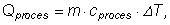
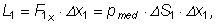
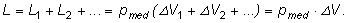
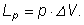
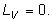

Tabelul 3-1. Călduri specifice la volum constant (cV) şi la presiune constantă (cp).
| Substanţa | cV (J·kg-1·K-1) |
cp (J·kg-1·K-1) |
| He | 3160 | 5240 |
| Ar | 314 | 524 |
| N2 | 741 | 1040 |
| O2 | 652 | 913 |
| CH4 | 1680 | 2200 |
| H2O (vapori la 100°C) |
1530 | 2020 |
 Provocarea 3-1
Provocarea 3-1
Găseşti vreo regularitate pe care o respectă valorile din tabelul de mai sus?
Poţi calcula cantitatea de căldură transferată între un sistem termodinamic şi mediul său într−un proces la volum constant astfel:
iar într−un proces la presiune constantă:
În general, pentru alt tip de proces, cantitatea de căldură transferată între sistem şi mediu este:

unde cproces este căldura specifică pentru acel proces.
Tot astfel, şi lucrul mecanic transferat între sistem şi mediul său depinde de tipul procesului la care participă sistemul.
Dacă se modifică volumul sistemului, forţele care se exercită la frontiera acestuia efectuează lucru mecanic: sistemul schimbă lucrul mecanic cu mediul său (figura 3−1).
Figura 3-1. În timpul modificării volumului unui sistem, acesta schimbă lucru mecanic cu mediul său.
Lucrul mecanic efectuat la deplasarea mică Δx1 a unui "petec" al frontierei având aria ΔS1, suficient de mică pentru ca petecul să fie considerat plan, este:

unde F1x este proiecţia forţei pe direcţia deplasării, iar pmed este presiunea medie în timpul procesului.
Cantitatea ΔS1·Δx1 reprezintă variaţia de volum ΔV1 corespunzătoare petecului considerat.
Lucrul mecanic total schimbat de sistem pe parcursul procesului îl obţinem însumând pentru toate peticele frontierei:

Dacă pe parcursul procesului presiunea este constantă, lucrul mecanic transferat între sistem şi mediu este:

Dacă însă volumul sistemului nu se modifică (ΔV), sistemul nu schimbă lucru mecanic cu mediul său:

 Cantitatea de căldură şi lucrul mecanic transferate între un sistem
şi mediul său în timpul unui proces sunt mărimi de proces (depind de procesul la care participă sistemul).
Cantitatea de căldură şi lucrul mecanic transferate între un sistem
şi mediul său în timpul unui proces sunt mărimi de proces (depind de procesul la care participă sistemul).